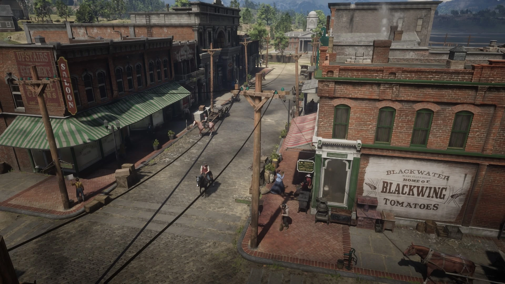
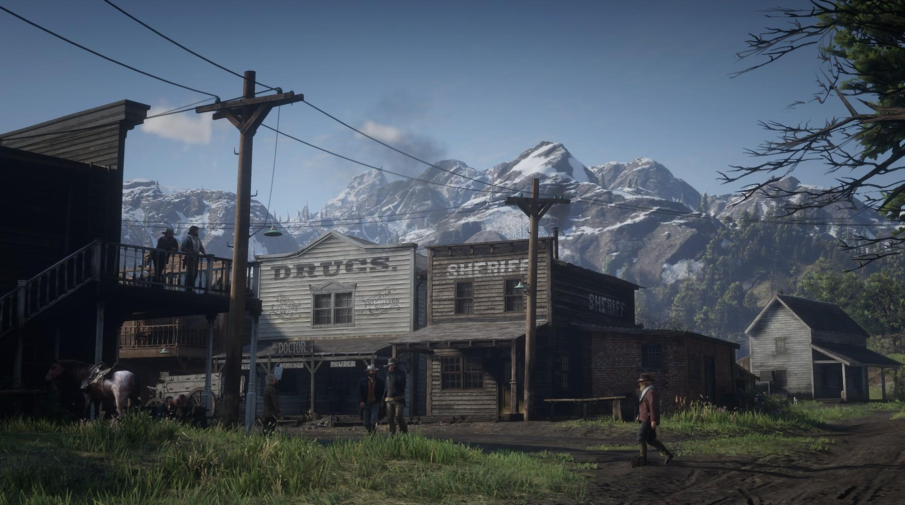
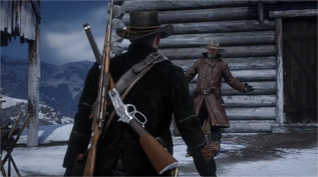

História
A história acompanha Arthur Morgan, um dos membros mais antigos e respeitados da gangue Van der Linde. Após um assalto dar errado na cidade de Blackwater, em 1899, o grupo é forçado a fugir para as montanhas durante um inverno brutal. Eles lutam para sobreviver ao frio enquanto procuram abrigo, comida e qualquer oportunidade de recomeçar. Aos poucos, percebemos que a gangue é liderada por Dutch Van der Linde, um homem carismático que começa a demonstrar impulsividade e paranoia depois do desastre em Blackwater.
Quando o inverno finalmente acaba, Arthur e os outros descem para o vale de Heartlands, onde tentam reconstruir o acampamento e conseguir dinheiro. A gangue realiza pequenos trabalhos e assaltos, mas cada ação atrai ainda mais a atenção da lei, de caçadores de recompensas e, principalmente, da Agência Pinkerton, determinada a capturar Dutch e destruir o grupo.

Com o tempo, Arthur passa a notar que Dutch está mudando. Suas decisões se tornam cada vez mais imprudentes e violentas, baseadas em planos grandiosos que raramente funcionam. Arthur, que sempre acreditou na filosofia de liberdade da gangue, começa a duvidar do caminho que estão seguindo. Paralelamente, ele ajuda seus companheiros mais próximos, como John Marston, que tenta cuidar de sua família, e Sadie Adler, que após perder tudo para uma gangue rival se transforma em uma caçadora feroz.

Durante as tentativas de conseguir dinheiro suficiente para fugir do país, o grupo se envolve com políticos corruptos, famílias rivais e até forças militares locais. Uma sequência de fracassos desestabiliza a gangue, que perde aliados importantes enquanto a perseguição das autoridades se intensifica. Em meio ao caos, Arthur descobre que está com tuberculose, e sua saúde começa a piorar rapidamente. Com pouco tempo de vida, ele reflete sobre suas escolhas e busca fazer o que é certo, mesmo depois de tantos anos como fora-da-lei.
À medida que tudo desmorona, Dutch passa a desconfiar de todos e toma decisões que colocam o grupo em risco. As tensões internas aumentam, especialmente por causa de Micah Bell, um membro traiçoeiro que manipula Dutch para o pior. Arthur percebe que Micah é o verdadeiro informante dos Pinkerton, mas Dutch se recusa a acreditar.

No final, Arthur tenta garantir a fuga de John Marston e sua família, acreditando que John ainda pode ter uma vida melhor. Ele enfrenta os Pinkerton, confronta Micah e luta para preservar o que resta de sua honra antes de morrer. Nas cenas finais da campanha, Arthur sucumbe à doença ou à violência, dependendo das escolhas do jogador.
O epílogo, ambientado em 1907, segue John Marston, que trabalha para construir uma fazenda e abandonar a vida criminosa. Ainda assim, ele precisa enfrentar os últimos fantasmas de seu passado, culminando em seu confronto final com Micah — encerrando de vez a história da gangue Van der Linde e abrindo caminho para os eventos do primeiro Red Dead Redemption.
Curiosidades
- Arthur Morgan foi criado depois dos primeiros roteiros do jogo.
- O jogo possui mais de 500 mil falas gravadas.
- NPCs reagem de forma diferente dependendo da limpeza do Arthur.
- Mais de 200 espécies de animais foram programadas com IA.
- Grande parte do mapa de RDR1 foi recriado dentro de RDR2.